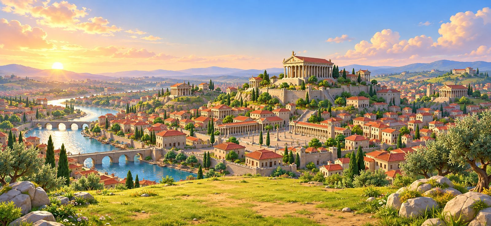
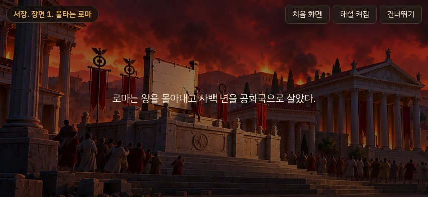
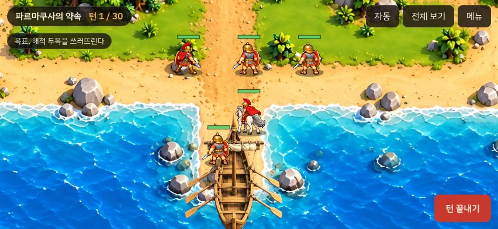
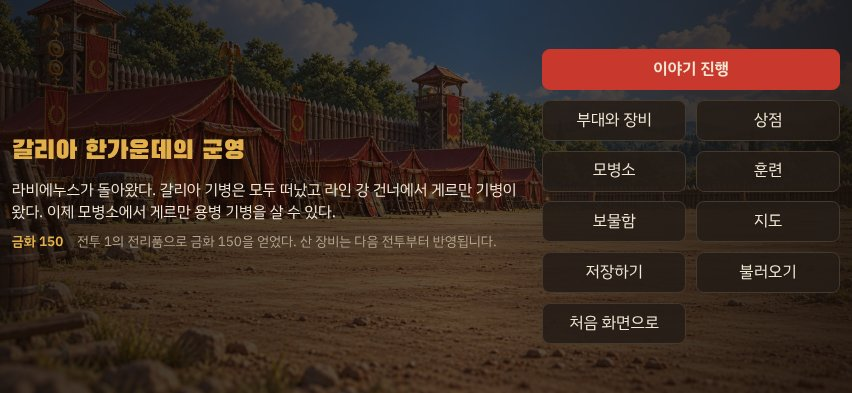

카이사르전 Kaisarjeon
A tactical RPG of Julius Caesar
Lead Gaius Julius Caesar from a young officer at the walls of Mytilene to the master of Rome. Fight more than fifty battles across Gaul, Britain, Egypt and the Roman civil war on detailed maps where rivers, walls and forests change every fight. Your choices decide whether the story follows the historical record or turns into an empire that never was.
젊은 장교 카이사르가 미틸레네 성벽에서 시작해 로마의 주인이 되기까지. 갈리아, 브리타니아, 이집트, 내전의 전장 쉰 곳 넘게를 지형과 함께 싸워 나가는 턴제 전략 RPG입니다. 고르는 길에 따라 이야기는 역사대로 흐르기도 하고, 없었던 제국으로 나아가기도 합니다.


